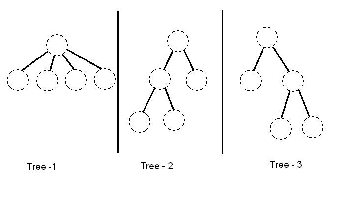

Facing Problem With Trees
Input: standard input
Output: standard output
Time
Limit: 3 seconds
In this problem you are to find the number ( Let P ) of ordered trees where each of the tree consists of exactly m edges and each of the nodes has out-degree either exactly two or zero and the root has even out-degree. For example, if there are four edges, we get the following three trees.

Input
The first line in the input file is an integer representing
the number of test cases. Each of the test cases follows below. Each case
consists an integer representing various even values of m ( 2 ≤ m
≤ 500 ).
For each test case, first print the serial number of the case and then print the value of P separated by an space from the serial number. You should use Big Integer operation to print P and P has maximum 200 digits.
Sample
Input
3
4
10
14
Sample Output
Case 1: 3
Case 2: 126
Case 3: 1716
Problem setter: Anupam Bhattacharjee, CSE, BUET
"~~
NP ≠
P as NP means never possible and P means possible. Where is my Turing award of
2999?? ~~